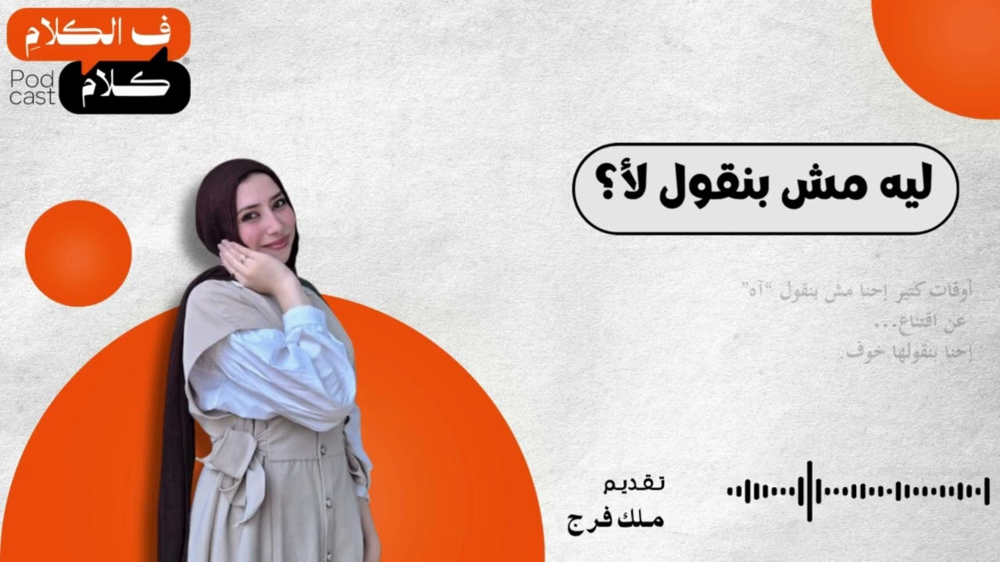

← الحلقات
عن الناس وعنك · الحلقة ٣

ليه مش بنقول لأ؟
١٨ يوليو ٢٠٢٦ · ٤:٠٤ · #لأ #عن_الناس_وعنك
ليه بنقول "آه" في الوقت اللي إحنا جوانا بنقول "لأ"؟
هل بنخاف نزعل الناس؟ ولا بنخاف نخسرهم؟
في الحلقة دي من "ف الكلامِ كلام" بنتكلم عن الحدود، واستنزاف إرضاء الآخرين، وإزاي كلمة "لأ" أوقات كتير بتكون حماية لنفسك مش رفض لغيرك.
كلمة "لأ" أوقات كتير بتكون حماية لنفسك مش رفض لغيرك.
نص الحلقةاقرا النص
يمكن أخطر إدمان إنك ترضي الناس على حساب نفسك. عمرك سألت نفسك ليه بنقول آه في وقت إحنا جوانا بنقول لأ؟ ليه بنوافق وإحنا أصلًا مش مرتاحين؟ يمكن عشان منزعلش حد؟ يمكن عشان نخاف نخسر حد؟
ويمكن عشان متعودناش نختار نفسنا. بس خليني أقولك الحقيقة من غير تجميل. مش كل الناس اللي في حياتك موجودة عشانك. في ناس موجودة عشان إنت مبتقولش لأ. أيوه زي ما سمعت كده.
في ناس علاقتها بيك قايمة على إنك دايمًا متاح، دايمًا بتوافق، دايمًا بتعدّي. ولما تيجي مرة تفكر ترفض بتخاف. تخاف يزعلوا، تخاف يمشوا. تخاف تبقى لوحدك. بس الحقيقة إن اللي هيمشي عشان قولت لأ مكانش موجود عشانك إنت من الأول.
كان موجود عشان إنت بتدي مش عشان إنت كشخص. أما اللي هيفضل هيفضل عشان شخصك مش عشان بتعمل كل حاجة هو عايزها. وخليني أقولك حاجة يمكن تضايقك شوية. إنت مش بتتعب من الناس على قد ما بتتعب من نفسك.
من كل آه قولتها غصب عنك. من كل مرة سكت وعدّيت. كل مرة وافقت فيها على حاجة مش شبهك. إنت كده من غير ما تحس علّمت اللي قدامك إن اوكي ده عادي.
فطبيعي يكمل، وطبيعي يتمادى، وطبيعي جدًا يستنزفك. علّي قيمتك شوية. مش كل حاجة محتاجة موافقة. ومش كل طلب لازم يتنفذ. إنت مش هنا عشان ترضي كل الناس. وفي مقولة بتقول يعني بمعنى اصح إن إنت مش هتاخد جايزة على إنك شخص كويس you don’t get a medal for self-neglect وفيه فرق كبير بين إنك شخص طيب وبين إنك بتيجي على نفسك.
الطيبة اختيار لكن التنازل المستمر ده استنزاف. خليني أبسطهالك أكتر. فيه شخص بيقول آه لكل حاجة وبيفكر إن كده الناس هتحبه. بس مع الوقت بيتحول لشخص وجوده بقى عادي وتعبه بقى مش محسوب.
وفيه شخص تاني مش بيرفض كل حاجة بس مش بيقبل كل حاجة برضو. لما بيقول آه بيبقى قاصد ولما بيقول لأ بيكون عارف ليه وبيبقى هادي وواثق من نفسه. وده الفرق الحقيقي بين واحد بيحاول يثبت نفسه للناس وواحد عارف نفسه فمش محتاج يثبت حاجة.
وتخيل كده لو حد بتحبه بيعمل في نفسه اللي إنت بتعمله في نفسك. بيوافق على كل حاجة وبيسكت على حساب راحته. هتزعل عليه صح؟ طب ليه بتقبل ده لنفسك؟ المرة الجاية قبل ما تقول آه اسأل نفسك هو أنا موافق ولا خايف بعمل ده بحب؟
ولا لمجرد إني خايف؟ ولو خايف فانا خايف من إيه؟ إن حد يزعل؟ ولا إنك لأول مرة تختار نفسك؟ جرب تقول لأ مرة. مش بعصبية ولا بقلة ذوق. بس بهدوء جدًا زي مثلا أنا مش مناسب ليا ده دلوقتي.
وهتتفاجئ على فكرة. بس مش من رد فعلهم. لكن من إحساسك إنت. إن الدنيا ما وقفتش ولا حاجة وإنك حسيت بحاجة جديدة. ألا وهي الراحة. وفي نهاية كلامي احب اقول لك إنك مش لازم تقول آه عشان تتحب ومش لازم توافق عشان تفضل.
فيه ناس هتمشي وارد. بس خليك واثق إن اللي مشي مكانش موجود عشانك. واللي فضل فضل عشانك إنت. وأوقات كتير كلمة لأ مش رفض لغيرك. دي حماية لنفسك. كانت معاكم ملك فرج، وأشوفكم في حلقة جديدة من ف الكلامِ كلام.